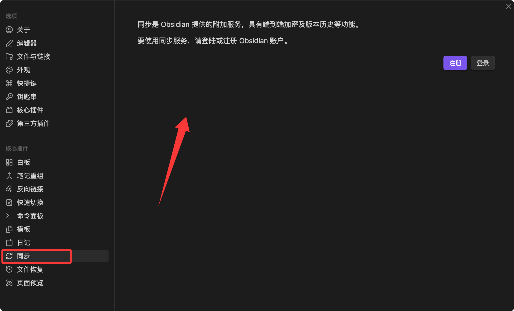
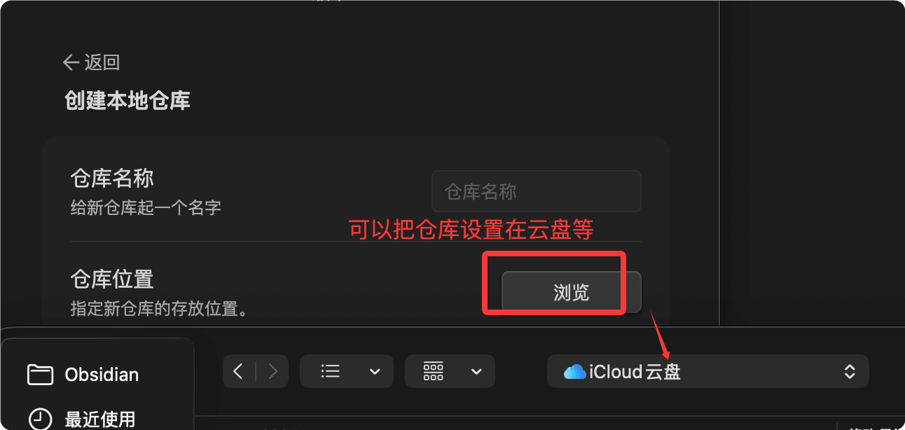

Obsidian 同期、バックアップと応用テクニック
ノートシステムで最も重要なのはデータの安全性です。多大な時間をかけて蓄積した知識が、ハードディスクの故障や誤操作で失われることは避けなければなりません。
この章では、同期プラン、バックアップ戦略、モバイルでの利用、よくある問題のトラブルシューティングを扱います。
公式同期：Obsidian Sync
Obsidian Sync は、公式が提供するエンドツーエンド暗号化クラウド同期サービスであり、最も優れた同期体験を提供するプランです。

コア機能
- エンドツーエンド暗号化：データはアップロード前にローカルで暗号化されるため、サービス提供者はノートの内容を読めません
- 差分同期：変更部分のみを同期するため、全量コピーよりはるかに高速です
- バージョン履歴：各ファイルの変更履歴を保存し、任意のバージョンに遡れます
- マルチデバイス同期：デスクトップとモバイル間でシームレスに同期し、競合は自動的にマージされます
料金
Obsidian Sync は有料サービスで、年間サブスクリプションです。
Vault を5つ以上持っている場合やノートライブラリの容量が大きい場合、Sync が最も手間のかからない選択肢です。
設定手順
- 設定 → Sync で Obsidian アカウントにログインします
- リモート Vault を選択します（初回は作成が必要）
- 暗号化パスワードを設定します（必ず安全に保管してください。失うと復元できません）
- 同期するフォルダとファイルタイプを選択します
- 別のデバイスでも同じようにログインし、同じリモート Vault に接続します
暗号化パスワードはデータを復元するための唯一の証明書です。公式でもリセットできません。パスワードマネージャーに保存するか、紙に書いて安全に保管することをお勧めします。
無料同期プラン
同期に費用をかけたくない場合は、いくつかの無料プランを選択できます。

iCloud（macOS + iOS ユーザーに最適）
Vault フォルダを iCloud Drive に置くと、macOS と iOS デバイス間で自動同期されます。
利点は、設定不要でAppleエコシステムとシームレスに統合されることです。
欠点は、Windows の iCloud クライアントは使い勝手があまり良くなく、たまに同期競合が発生することです。
OneDrive / Dropbox
Vault フォルダを OneDrive または Dropbox の同期ディレクトリに置きます。
全プラットフォーム（Windows、macOS、Linux、モバイル）をサポートしており、iCloud よりもクロスプラットフォーム互換性に優れています。
注意：複数のデバイスで同時に同じノートを編集しないでください。競合コピーが生成される可能性があります。
Git + GitHub によるバージョン管理
Vault を Git リポジトリとして初期化し、GitHub のプライベートリポジトリにプッシュします。
この方法の利点は、バージョン履歴が組み込まれていることで、各コミットがスナップショットに相当します。
例：Vault を Git リポジトリとして初期化
cd ~/Documents/マイナレッジベース
# Git リポジトリを初期化
git init
# .gitignore ファイルを作成し、Obsidian の設定とキャッシュを無視する
echo ".obsidian/workspace.json" >> .gitignore
echo ".obsidian/workspace-mobile.json" >> .gitignore
echo ".trash/" >> .gitignore
# 最初のコミット
git add .
git commit -m "ナレッジベースを初期化"
# GitHub プライベートリポジトリを関連付けてプッシュ
git remote add origin git@github.com:username/my-vault.git
git push -u origin main
モバイルでは、Working Copy（iOS）や MGit（Android）などの Git クライアントを使ってプルやプッシュができます。
Git 同期では、手動で commit + push + pull を行う必要があり、iCloud のように自動同期はできません。Git の使用習慣があるユーザーに向いています。また、他の同期プランの補完（バージョン保護を追加する層）としても適しています。
プラン比較
| プラン | 費用 | 自動同期 | バージョン履歴 | 難易度 |
|---|---|---|---|---|
| Obsidian Sync | 有料 | 是 | 完全 | 低 |
| iCloud | 無料（5GB） | 是 | 制限付き | 非常に低い |
| OneDrive/Dropbox | 無料（基本容量） | 是 | 制限付き（30日間） | 非常に低い |
| Git + GitHub | 無料 | 否 | 完全 | 中程度 |
モバイルでの利用
Obsidian は iOS と Android のクライアントを提供しており、機能はデスクトップ版とほぼ同じです。
モバイルの特徴的な機能
- クイックノート：iOS のショートカットと Android のクイックタイルで、ワンタップでノートを作成
- 音声メモ：一部のコミュニティプラグインは音声の文字起こしに対応
- プルダウンジェスチャー：ファイルリストの上部でプルダウンして同期状態を更新
モバイルでのヒント
モバイルはより適していますキャプチャではなく整理。
スマホでは次の2つのことだけを行うことをお勧めします：インスピレーションやタスクをすばやく記録する（ショートカットで日記を開く）、そして既存のノートをいつでも確認する。
複雑なレイアウト、テンプレート適用、Dataview クエリの作成などの操作はデスクトップで行います。
モバイルのツールバー設定
モバイルの設定では編集ツールバーをカスタマイズでき、よく使う Markdown 操作（太字、リンク、画像、チェックボックス）を最もタップしやすい位置に配置できます。
エクスポートと公開
PDF エクスポート
ノートを開き、右上隅の「その他のオプション → PDF エクスポート」をクリックします。
エクスポートされた PDF には、現在の Obsidian テーマのスタイルが保持されます。
Pandoc エクスポート（より柔軟な形式変換）
Pandoc コミュニティプラグインをインストールすると、ノートを Word、HTML、LaTeX などの複数の形式にエクスポートできます。
事前にシステムに Pandoc コマンドラインツールをインストールする必要があります。
# macOS 安装 Pandoc $ brew install pandoc # Windows 安装 Pandoc（在 PowerShell 中） $ winget install --id JohnMacFarlane.Pandoc
Obsidian Publish：個人デジタルガーデンを構築
Obsidian Publish は公式の有料サービスで、選択したノートをウェブサイトとして公開できます。
公開されたウェブサイトでは、双方向リンク、グラフビュー、検索などの Obsidian のコア機能が維持されます。
個人ブログ、公開ナレッジベース、プロジェクトドキュメントサイトの構築に適しています。
データバックアップ戦略
同期はバックアップとは異なります。同期では、誤って削除したファイルも同様に削除されます。
優れたバックアップ戦略では、次の点を考慮する必要があります3-2-1 原則：3つのコピー、2種類のメディア、1つはオフサイト。
推奨バックアッププラン
| 階層 | 方法 | 頻度 |
|---|---|---|
| 同期層 | iCloud / Obsidian Sync / OneDrive による日常同期 | リアルタイム |
| バージョン層 | Git で定期的に commit + push を GitHub プライベートリポジトリへ | 毎日または毎週 |
| コールドバックアップ層 | 定期的に Vault 全体を .zip に圧縮し、外付けハードディスクやクラウドストレージに保存 | 毎月 |
Vault を圧縮するコマンド
# 将 Vault 打包为带日期的 zip 文件 $ zip -r "vault-backup-$(date +%Y%m%d).zip" ~/Documents/我的知识库
プレーンテキストの長期的な信頼性
Obsidian のノートはすべてプレーンテキストの Markdown ファイルです。
30年後も、任意のテキストエディタでそれらを開くことができます。
これは、Obsidian がすべての専有形式ノートソフトウェアと比較して持つ、最も重要な長期的な利点です——あなたのノートの寿命は、いかなる企業の存続にも依存しません。。
よくある問題のトラブルシューティング
プラグイン競合のトラブルシューティング
起動が遅い、画面が異常、操作がカクつくなどの問題が発生する場合、プラグインの競合が原因である可能性が高いです。
調査手順：
- 設定でコミュニティプラグインをすべて無効にする
- 1つずつ再度有効にし、有効にするたびに問題が再現するかテストする
- 問題を引き起こしているプラグインを見つけたら、更新や既知のバグがないか確認する
コマンドを使用Cmd+Shift+I（Windows: Ctrl+Shift+I）で開発者ツールを開き、Consoleパネルで具体的なエラー情報を確認できます。
グラフビューが大きすぎる
グラフを開いた後にひどくカクつく場合：
- 設定でグラフのレンダリング深度を減らす（すべてではなく2～3階層にする）
- フィルターで表示する必要のないフォルダーを非表示にする（例：日記、アーカイブ）
- ノードのアニメーションとドラッグの物理効果をオフにする
同期競合ファイル
次のようなファイルを見た場合：ファイル名（conflict 2026-05-21）.mdこのようなファイルは、2台のデバイスが同じノートを同時に編集したことを意味します。
2つのファイルを開き、手動で差分をマージした後、Obsidian Syncの「同期ログを表示」でマージ結果を確認します。
習慣として、デバイスを切り替える前に現在のノートが保存され、同期が完了していることを確認することをお勧めします。
Vault の移行
パソコンを変更する際、Vaultの移行は2つのステップだけです：
- Vaultフォルダー全体を新しいパソコンにコピーします
- 新しいパソコンにObsidianをインストールし、そのフォルダーを開くだけです
すべての設定、プラグイン、テーマは、.obsidianフォルダー内に保存され、Vaultと一緒に移行されます。
.obsidian フォルダの破損
設定が乱れてObsidianの起動に異常が発生する場合は、リセットを試せます：
- 名前を変更.obsidian 为 .obsidian.bakすると、Obsidianは新しいデフォルト設定を生成します
- ノートファイルは影響を受けません。ただ、プラグインとテーマの再設定が必要です。
クリックしてノートを共有
<p style="font-size:14px;">ノートはこの記事の内容を拡張したものである必要があります！</p><br> <p style="font-size:12px;"><a href="../tougao.html" target="_blank">記事の投稿は、こちらをクリック</a></p> <p style="font-size:14px;"><a href="../w3cnote/runoob-user-test-intro.html" target="_blank">登録招待コードの取得方法</a></p> <h3 class="text-muted"><i class="fa fa-info-circle" aria-hidden="true"></i> ノートを共有する前に<a href=";.html" class="runoob-pop">ログイン</a>が必要です！</h3> <p><a href="../w3cnote/runoob-user-test-intro.html" target="_blank">登録招待コードの取得方法</a></p>